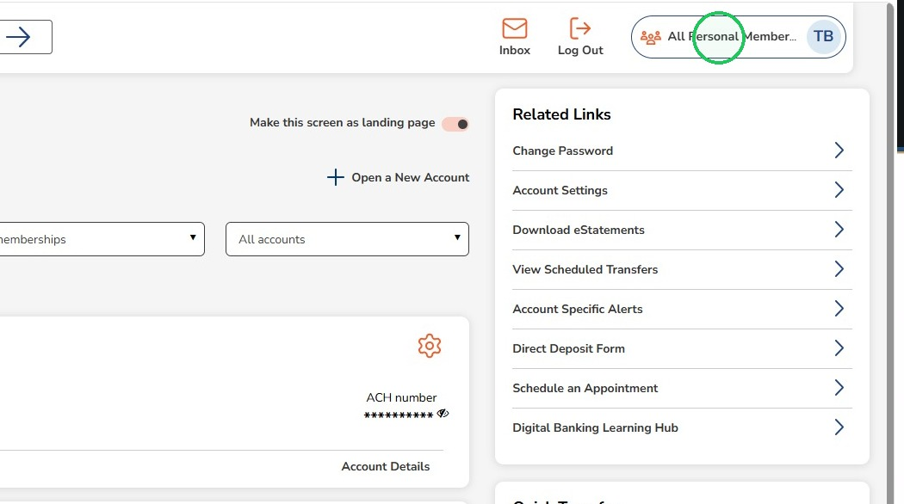
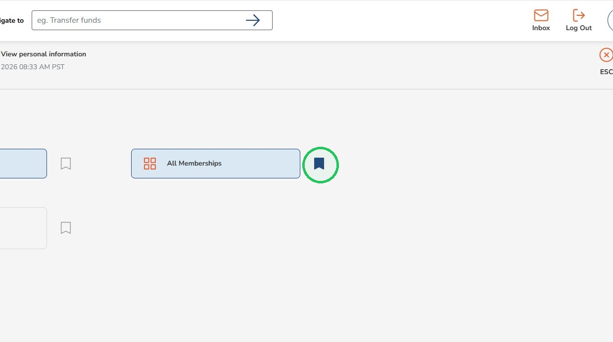
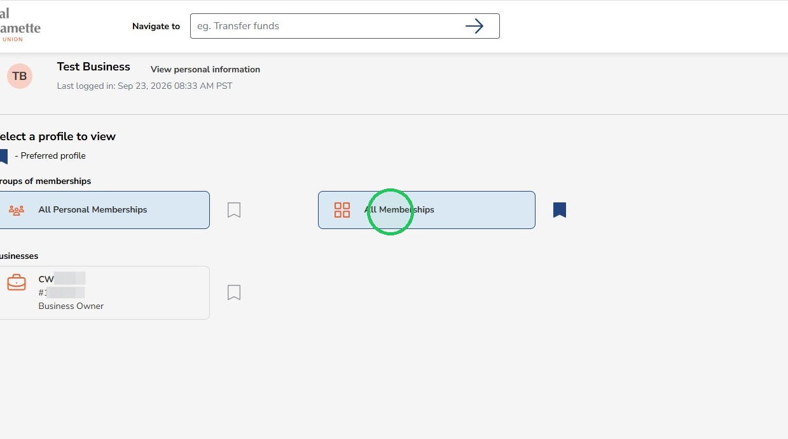
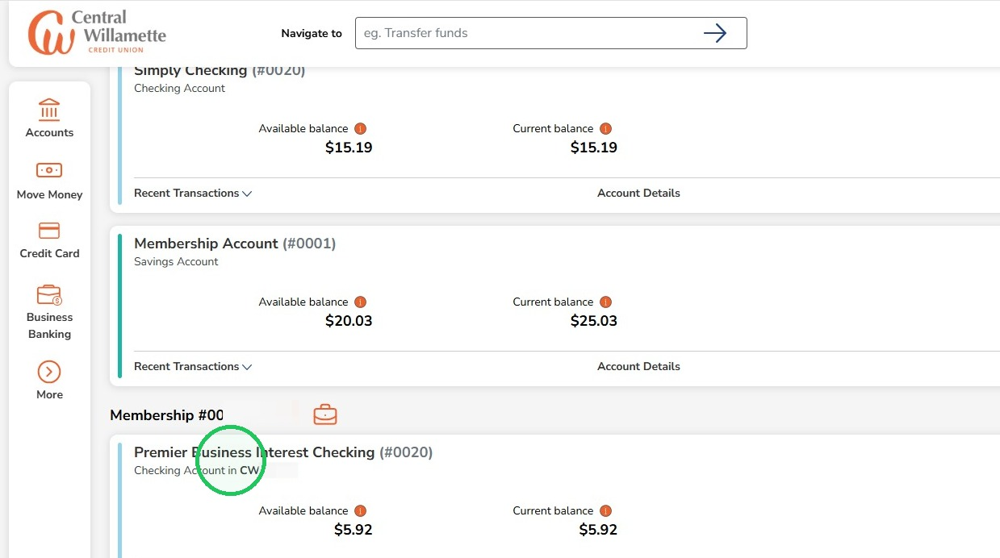
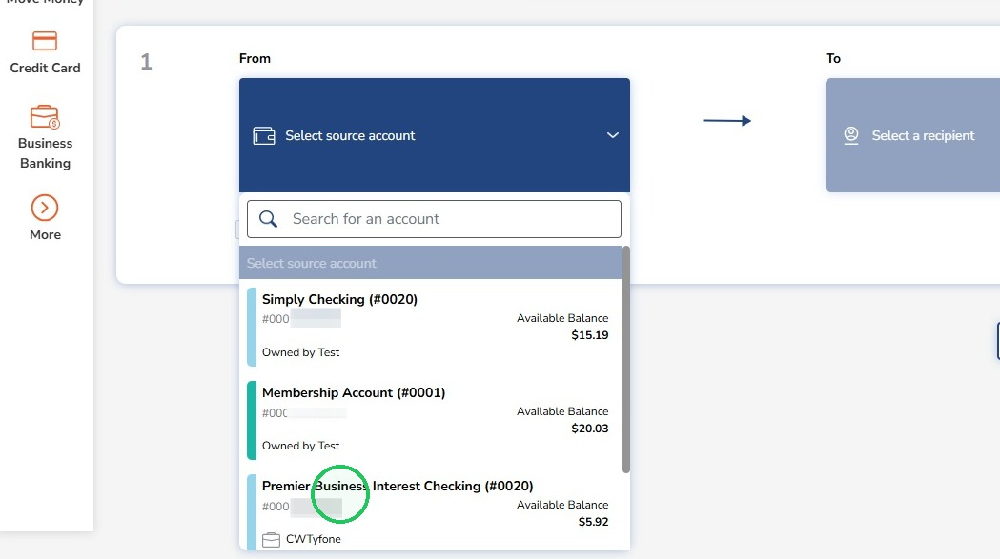

Change to All Membership View
The 'All Membership View' is an easier way to see all of your accounts together, Business and Personal. When in this view, Business and Personal accounts will show together on the Accounts Page and also together in the dropdown list when making an Internal Transfer.
1
Click the profile switcher at the top right

2
Clicking on the bookmark icon will set a view as your default

Your default view will be what you automatically see when logging in
3
Click "All Memberships"

4
Now you will see Business and Personal accounts together on the Accounts page

5
Now Business and Personal accounts will also appear in the dropdown list of accounts when completing an Internal Transfer

You will no longer need to add your business as an internal recipient to transfer between Personal and Business accounts when using the All Memberships view!